Capítulo 1 Origem da ciência
1.1 Você sabe como os cientistas fazem suas descobertas?
Tudo começa com uma ideia, um questionamento ou uma pergunta e a resposta para as nossas dúvidas pode ser encontrada por meio da Ciência. A ciência nos ajuda a compreender o mundo à nossa volta, explicando porque razão as coisas acontecem ou se comportam de determinada forma.
Figura 1.1: O início de tudo
A ciência é uma busca por respostas e é movida pela nossa curiosidade, pelo desejo de conhecer, compreender, explicar, descobrir e atender as necessidades coletivas e individuais.
A Ciência não é um assunto meramente de cientistas e diz respeito a todos os cidadãos e está presente em todas as profissões. Durante muito tempo, acreditou-se que ciência era algo aceitável apenas para meninos. Por causa disso, muitos meninos cresceram e se tornaram cientistas, enquanto muitas meninas acharam que não poderiam seguir essa carreira. Hoje, na verdade, TODOS podemos pensar em ser o que quisermos no futuro, inclusive cientistas. Assita ao vídeo a seguir e conheça a história de jovens cientistas brasileiros:
Você sabia que cientistas negras e negros contribuíram muito com a ciência e sociedade. No Portal Geledés é apresentada a história de 23 cientistas negros que realizaram brilhantes descobertas,a figura abaixo ilustra alguns deles.
Figura 1.2: Cientistas negras e negros de todos os tempos
Você acha que só existem esses cientistas? Que nada… Inclusive, há inúmeros cientistas no Brasil realizando investigações científicas da Hora! Entre eles a professora Rita de Cássia dos Santos e a pesquisadora Jaqueline Goes de Jesus. Na página do site Minas faz Ciência você também poderá visualizar ou até baixar dois ebooks sobre cientistas brasileiras e conhecer um pouco mais sobre o trabalho que elas desenvolvem.
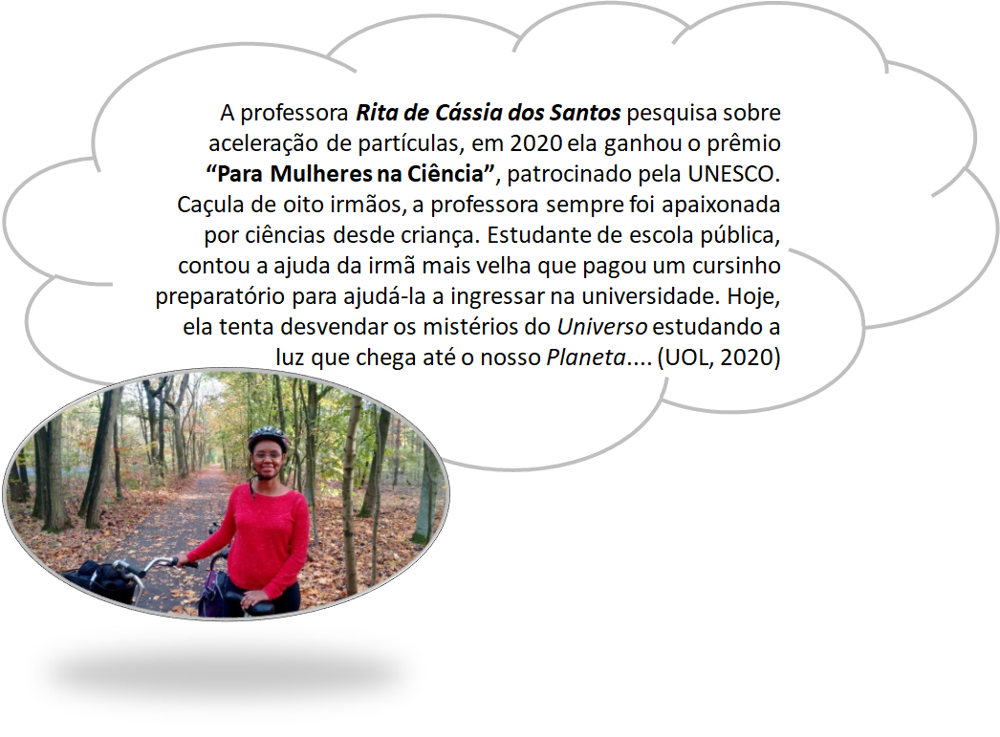 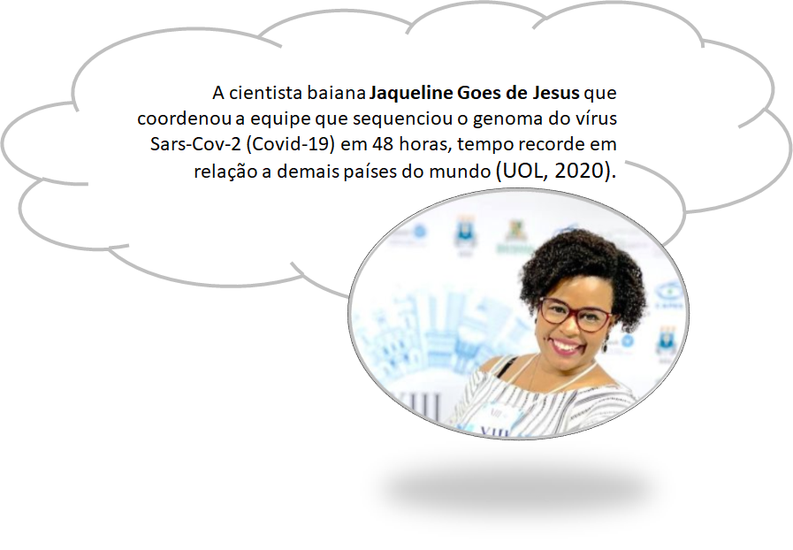 Como você já pode ter observado ao longo da história da humanidade cientistas de diferentes lugares do mundo contribuíram para a produção do conhecimento científico. Suas ideias, invenções e explicações para eventos da natureza, sua própria realidade e tradições ajudaram a solucionar inúmeros problemas, além de criar ideias revolucionárias no decorrer do desenvolvimento da sociedade. Mas, não pensem que a evolução da ciência ocorreu de forma fácil, sem dificuldades ou resistências. Muitos cientistas passaram por momentos de crises e dificuldades até encontrarem suas descobertas, ao final deste capítulo apresentamos alguns desses cientistas.
1.2 As antigas civilizações e suas contribuições para a ciência
A cerca de 2000 a 500 a.c, na região da Mesopotâmia, onde se situa hoje o Iraque, viveram vários povos que trouxeram contribuições relevantes para a construção do conhecimento científico, são eles: sumérios, acádios, caldeus, assírios, babilônios, hebreus e persas.
Os babilônios desenvolveram um sistema de pesos e medidas, baseado nas partes do corpo humano, como palmos e pés. Eles também eram excelentes astrônomos, já conheciam cinco planetas e já sabiam que os eclipses lunares eram devido à sombra da Terra que se interpõe entre o Sol e a Lua. Enquanto que a Bíblia judaica, é uma das grandes contribuições dos antigos hebreus (hoje chamados de judeus ou israelitas), com a ideia central de um Deus único, eterno, onisciente, onipotente, que prevalece na nossa cultura até os dias atuais, e que também influenciou as Leis propostas pelo cientista Isaac Newton (Rocha e outros, 2002).
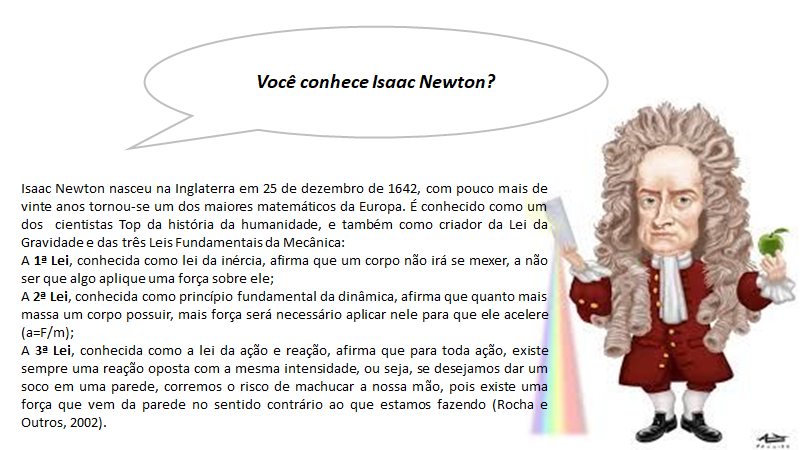 Os chineses também tiveram participação na construção do conhecimento científico, na astronomia, introduziram um sistema de coordenadas angulares (latitude e longitude) medidas a partir do Equador. Na área da matemática, inseriram o número zero no sistema numérico antes dos ocidentais, sabiam expressar números muito grandes como potências de 10 e aplicavam as leis das proporcionalidades conhecidas por nós como “regra de três”. Na física, a grande contribuição chinesa foi o conceito de ondas que se propagam no espaço (Rocha e Outros, 2002).
Os antigos povos africanos também deixaram um legado vasto e importante para humanidade. Muita gente não sabe, mas a África também foi um local de grandes descobertas e invenções humanas. Recentes registros paleontológicos e arqueológicos, e pesquisas científicas na área da biologia genética, utilizando a análise do DNA mitocondrial, confirmaram a origem comum de todos os seres humanos no continente africano (IPEAFRO-SECAD/MEC-UNESCO, 2007).
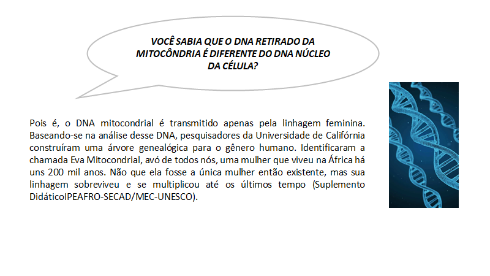 Foi na África que ocorreu a primeira revolução tecnológica da civilização, a passagem de caçador e coletor de frutos e raízes para a agricultura e pecuária. A prática da agricultura no vale do rio Nilo já existia há 18 mil e a pecuária era realizada na atual Nairóbi capital do Quênia, desde há 15 mil anos atrás, naquela época os povos africanos já domesticavam os animais utilizando técnicas mais sofisticadas, como o arado puxado por bois (UNESCO, 2010).
Desde então cientistas de diversas áreas (arqueólogos, antropólogos, biólogos, historiadores, entre outros) passaram a constatar que os africanos negros iniciaram e desenvolveram invenções científicas e tecnológicas, na área da agricultura, matemática, medicina, navegação, metalurgia, domesticação das plantas e dos animais. Além da cultura que foi espalhada em outros continentes Ásia, Europa, América e Oceania.
As linguagens escritas também foram inicialmente disseminadas entre os diferentes povos africanos. Os egípcios desenvolveram sua escrita 4000 a.C., denominados hieróglifos. Além dos hieróglifos, existem vários outros sistemas de escrita desenvolvidos pelos africanos, como o pictográfico, o ideográfico, e a escrita por meio de objetos. Na África, os pictogramas constituem uma rica e variada forma de expressão, registrando saudações, histórias e advertências. Já o ideograma é uma representação simbólica, utilizado na escrita chinesa e em várias regiões do continente africano, como o adinkra (IPEAFRO-SECAD/MEC-UNESCO, 2007).
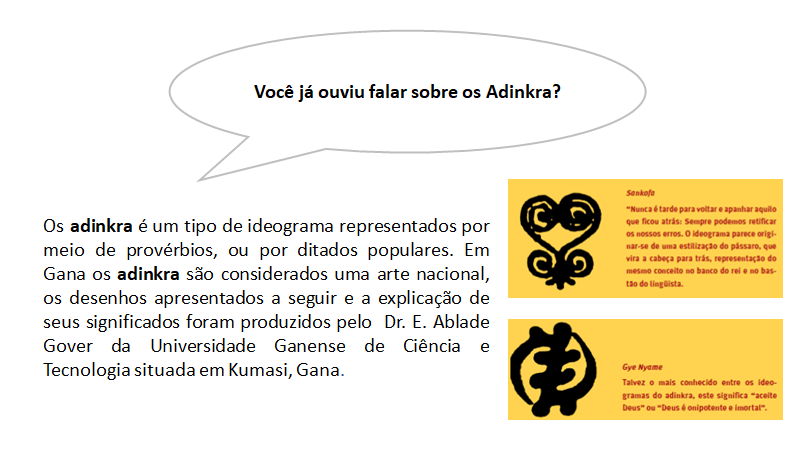 Ao longo do tempo outras formas de escrita foram constituídas, nos dias atuais existem duas principais formas de escrita, a baseada em ideogramas, que representa conceitos e ideias, e em grafemas, que é a representação gráfica do fonema, um tipo de escrita baseada em grafemas é a alfabética. O sistema de escrita alfabética mais utilizado no mundo, é o alfabeto romano, é o alfabeto utilizado para escrever a língua portuguesa e a maioria das línguas da Europa ocidental e central e das áreas colonizadas por europeus.
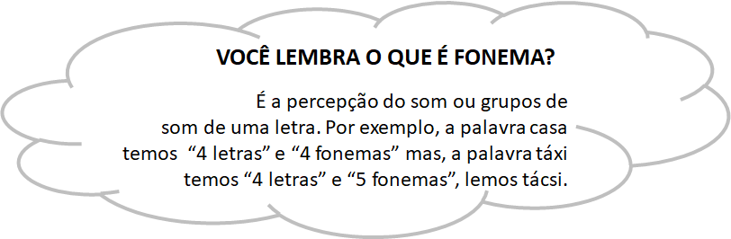
1.3 Contribuições dos povos africanos em diversos campos da ciência
1.3.1 Medicina
Os papiros descobertos por Smith (1650 a.C.) e Ebers (2600 a.C.) revelam que os povos africanos praticavam cirurgias desde a cesarina até à autópsia, passando pela remoção de cataratas e tumores cerebrais. Como também conheciam e aplicavam vacinas contra a varíola e outras doenças (IPEAFRO-SECAD/MEC-UNESCO, 2007). A medicina egípcia, por exemplo, tinha seu conhecimento a partir dos experimentos e estudos voltados para o interior do corpo humano, desenvolvido em função do embalsamento do corpo dos faraós e de pessoas influentes desta sociedade, a técnica da mumificação (Boulos Júnior, 2016).
Imhotep um arquiteto, médico e mestre egípicio, a cerca de 3.000 anos a.C. já realizava procedimentos médicos, como suturar ferimentos, curar fraturas empregando talas de madeira ou cartonagem, e práticas de antissepsia com sais de cobre, entre outras. Por isso hoje ele é reconhecido por alguns historiadores como pai da medicina (UNESCO, 2010).
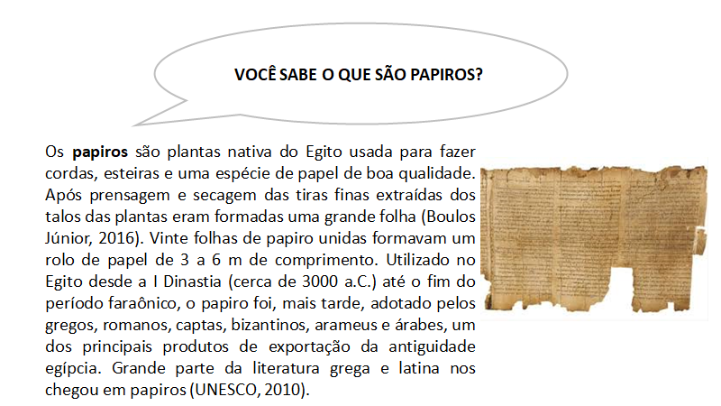 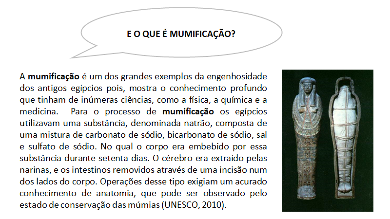
1.3.2 Matemática
As pirâmides do Egito ilustram o conhecimento matemático dos povos africanos, na medida em que projetou-se um monumento para durar ao longo do tempo, construídas há 2.700 anos a.C., com ângulos de 0,7o . Quéops, Quéfren e Miquerinos são os nomes das pirâmides situadas na cidade de Gizé. Os egípcios também aprenderem operar com três operações fundamentais: soma, subtração e divisão e, apesar de não possuírem um número para o zero, foram os inventores do sistema decimal (Boulos Júnior, 2016).
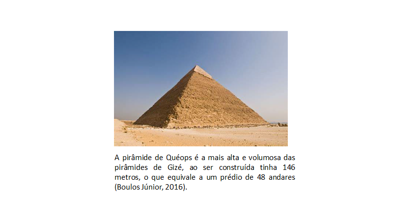
1.3.3 Astronomia
Registros existentes mostram que os Dogon, povo que habitava região próxima à cidade de Timbuktu, antiga capital universitária do reino de Mali, a cerca de sete séculos a.C., conheciam o sistema solar, a Via Láctea com sua estrutura espiralada, as luas de Júpiter e os anéis de Saturno (UNESCO, 2010). Já os egípcios contribuíram com a criação do calendário solar de 365 dias divididos em 12 meses de 30 dias, mais cinco dias de festa (Boulos Júnior, 2016).
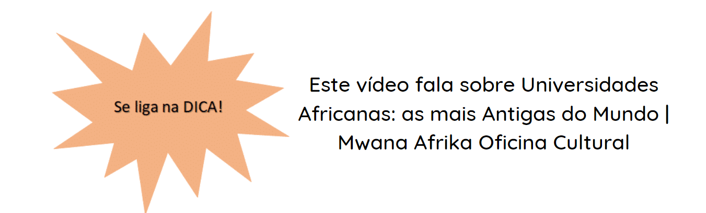
1.3.4 Arquitetura e Engenharia
As ruínas da cidade de Monomatapa, localizada no antigo reino de Zimbábue, é considerada por vários historiadores como uma grande construção da engenharia. O muro que circundava a cidade, tinha 250 metros de extensão, e cada metro continha 4.500 blocos de granito (Silva, 2007). A colocação das pedras, uma em cima da outra, sem cimento, é muito semelhante à técnica usada nos sítios históricos de Cuzco e Macchu Picchu, no Peru (UNESCO, 2010).
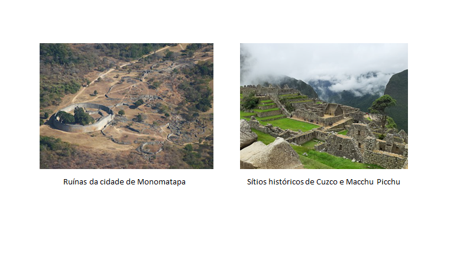
Outro aspecto relevante da civilização africana é o protagonismo das mulheres, reconhecidas como soberanas e guerreiras. Ainda hoje, em muitas sociedades tradicionais africanas a linhagem familiar é traçada com referência à mãe. Nessas sociedades, as mulheres partilham direitos sociais, econômicos, políticos e espirituais com os homens. Seu papel é essencial na sucessão real, na herança de bens materiais e no exercício do poder político.
No Egito há vários exemplos de mulheres soberanas: a faraó Hatshepsut, que assumia todas as funções de chefia do estado; Tiye e Nefertiti que reinaram junto com seus companheiros; Cleópatra; e a rainha Makeda, conhecida na bíblia como Rainha de Sabá. Também merece destaque as rainhas Candaces, dos reinos de Núbia, no atual Sudão, que durante 600 anos lideraram a administração civil e militar da sua nação. Anos depois, na época do colonialismo, a resistência de mulheres soberanas contra o domínio estrangeiro se dá na mesma direção das Candaces. Angola nos dá o exemplo da Rainha N’Zinga, Gana o de Asantewaa, a história da África é repleta de mulheres empoderadas (IPEAFRO-SECAD/MEC-UNESCO, 2007).
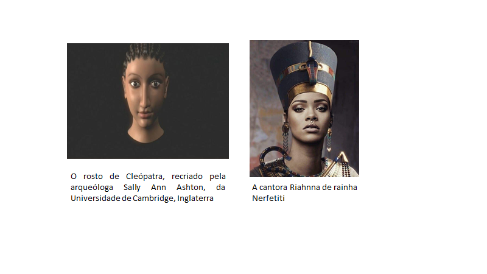 Evidências históricas mostram que os primeiros cientistas-filósofos gregos, como Sócrates, Platão, Tales, Anaxágoras e Aristóteles, estudaram no Egito e de lá absorveram conhecimento e assimilaram técnicas para a prática da investigação científica e da reflexão conceitual (Rocha e Outros, 2002).
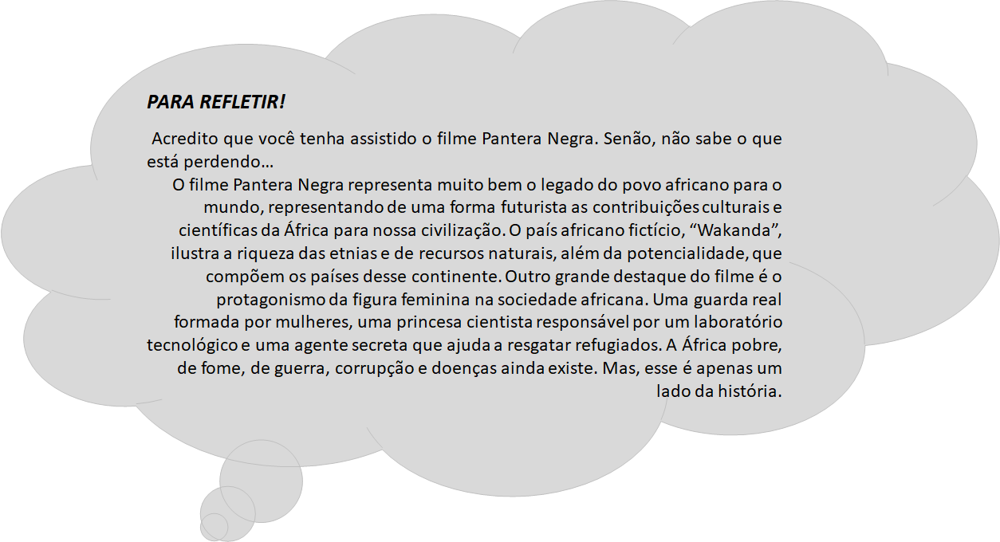 Após a civilização africana, outras nações continuam contribuindo para o desenvolvimento da ciência. Os registros históricos mostram que na Grécia antiga, a partir do ato de observar a natureza, a fim de propor uma possível origem racional para tais observações. E, provavelmente, foi na cidade-estado da Grécia antiga, em Mileto (atual Turquia), que surgiu o primeiro cientista reconhecido pela história, Tales de Mileto. Tales de Mileto (625 a.c.) foi o primeiro filósofo a impulsionar a ciência através de uma possível origem racional para o mundo por meio da observação da natureza e do uso da faculdade racional humana (questionamentos e explicações).
Ao longo dos anos, os cientistas também encontraram resistência às suas descobertas, pois a verdade incomoda muitos setores da nossa sociedade. Muitos foram perseguidos…. presos…. e condenados. Foi o caso de Galileu Galilei. A partir de observações da natureza (em aprox. 1630), Galileu defendeu a ideia do sistema solar centrado no sol. Tal afirmação fez com que ele fosse julgado e condenado a prisão pelo resto de sua vida (O livro da ciência, 2016).
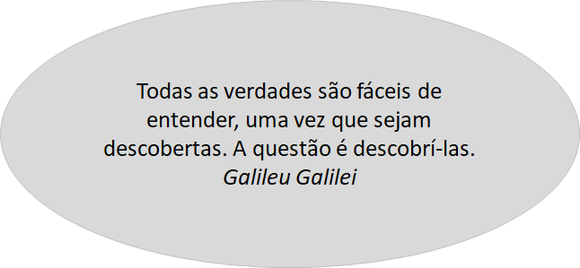 As observações feitas pelos cientistas podem, algumas vezes, levá-los para desventuras científicas, ou seja, conduzi-los a situações inusitadas e que não foram planejadas. Essa história é relatada por alguns cientistas, como a descrita pela cientista Jessica Ball, estudiosa de Vulcões. Ela, certa vez, fez uma expedição investigativa com seus alunos no parque nacional dos vulcões, no Havaí, e durante a investigação acabou caminhando e parando para conversar nas lavas. A parada sobre as lavas fez com que as solas das suas botas fossem derretidas (Desventuras na ciência,2019).
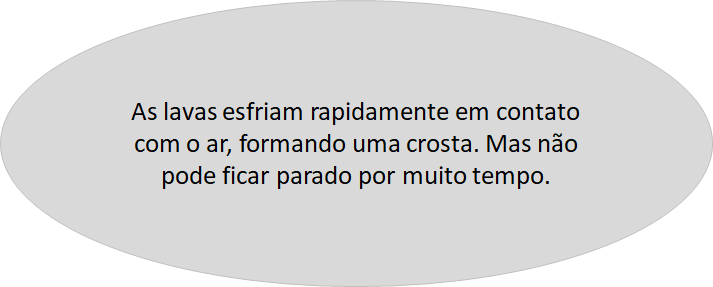
Imagine quantas dificuldades uma mulher precisava enfrentar, no século XIX, para correr atrás dos seus sonhos. Marie Sklodowska Curie foi uma pioneira, tanto por sua coragem e determinação, como por suas descobertas científicas. E foi reconhecida por isso, apesar de todos os preconceitos de uma sociedade machista e conservadora. Para termos ideia, Marie Curie foi a primeira pessoa, e única mulher até a atualidade, a receber o prêmio Nobel duas vezes, um em Física, ao demonstrar a existência da radioatividade natural em 1903, e o outro em Química, pela descoberta de dois novos elementos químicos em 1910.
Desde a infância, Marie Curie aprendeu a enfrentar e vencer desafios impostos pela sociedade e pelas condições de vida, sendo um grande exemplo como cientista para todos. Com a figura dessa importante cientista, temos a certeza que podemos viver em um mundo em igualdade de condições, onde todos podem contribuir para um bem maior, que é o de servir à humanidade. (As cientistas, 2017)
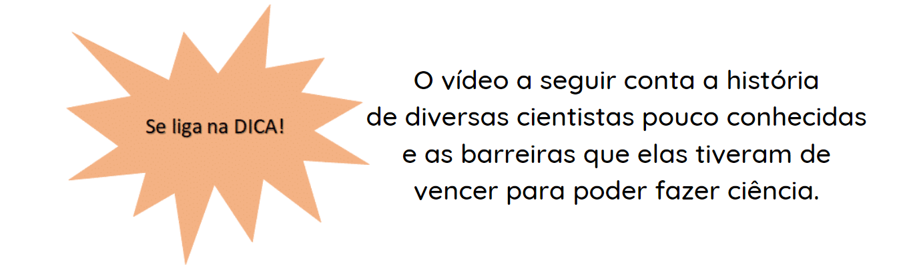
Assim como Marie Curie, outras mulheres cientistas também descobriram elementos químicos que hoje estão presentes na Tabela Periódica como mostra a figura abaixo.
Figura 1.3: Cientistas que descobriram Elementos Químicos presentes na Tabela Periódica
É importante sabermos que a ciência está presente em nossa casa, na escola, no teatro, no cinema, nos shows e nas ruas e muitos outros lugares da nossa cidade. Vários locais específicos no mundo e no nosso país tem tido a missão de saciar a nossa curiosidade e estimular nosso interesse científico por coisas do dia-a-dia, como por exemplo, o Museu Geológico da Bahia - Salvador, o Museu do Amanhã — Rio de Janeiro, o Catavento Cultural — São Paulo e o Museu de Ciência e Tecnologia PUC-RS — Porto Alegre.
O progresso de uma nação ou de um país depende da busca contínua pelo conhecimento. Formular possíveis explicações para uma pergunta ou questionamento que fazemos e testá-las são etapas básicas da Investigação Científica, tema do nosso próximo capítulo.
Referências
As cientistas (50 mulheres que mudaram o mundo), Rachel Ignotofsky, Editora Blucher, 128 páginas, 2017.
Boulos Júnior, Alfredo. História sociedade & cidadania, 1º ano / Alfredo Boulos Júnior. - 2. e.d. - São Paulo: FTD, 2016. - (Coleção história sociedade & cidadania).
Desventuras na Ciência, Jim Jourdane, Editora Blucher: 1ª edição, 78 páginas, 2019.
O livro da ciência, Globo Livros: 2ª edição, 352 páginas, 2016.
Origens e evolução das ideias da física. José Fernando m. Rocha (Org.) - Salvador: EDUFBA, 2002. 374p.
Silva, D. M. Por que riem da África? COLEÇÃO PERCEPÇÕES DA DIFERENÇA.NEGROS E NA ESCOLA. Vol.6. MEC/SECAD. Realização Núcleo de Apoio à Pesquisas em Estudos Interdisciplinares sobre o Negro Brasileiro, da Universidade de São Paulo - USP.
UNESCO. História geral da África, II: África antiga / editado por Gamal Mokhtar. – 2.ed. rev. – Brasília : UNESCO, 2010. 1008 p